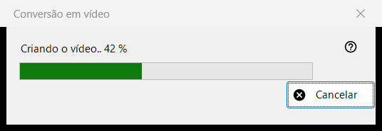
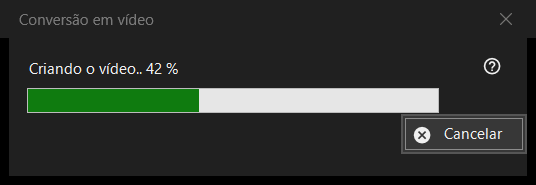

Conversão em vídeo
Finalidade
A janela de progresso de Converter em vídeo: transforma um GIF, WebP ou APNG animado em um MP4 e depois exclui o original. Abre-se depois que você confirma a conversão, fica acima do visualizador até o trabalho terminar e tem um único botão, Cancelar.


Nesta ordem
- Mostre uma imagem animada.
- Escolha Converter em vídeo.. no menu da imagem, ou pressione o botão Converter em vídeo da barra de ferramentas; ambos existem apenas enquanto uma animação está na tela, e não há atalho de teclado.
- Leia a confirmação e pressione Converter.
- Se perguntarem sobre baixar o FFmpeg, responda Sim.
- Acompanhe a barra, ou pressione Cancelar.
- O visualizador abre o novo MP4.
Os elementos
Início da conversão
O comando é oferecido apenas para animações, nunca para uma imagem estática ou um vídeo, e o visualizador o recusa para um contêiner protegido ou para um lugar em que nada pode ser gravado ao lado do arquivo. A reprodução para quando o trabalho começa.
A confirmação
Ela diz, em essência: o original será convertido no novo MP4 e é excluído permanentemente, sem passar pela Lixeira. Quando a animação tem transparência, acrescenta: A transparência será preenchida com preto. Cancelar é a resposta padrão. A caixa Não perguntar de novo até fechar o programa dura apenas até o visualizador ser fechado; nunca é gravada.
FFmpeg
A conversão usa o FFmpeg, que não faz parte do programa. Se ele estiver ausente, você é consultado uma só vez sobre o download (a pergunta mostra o tamanho; o arquivo vem do site do projeto, é guardado localmente e é software livre sob a licença GPL). Responder Não encerra o processo aqui e nada é criado nem excluído.
A janela de progresso
O título diz Criando o vídeo.. com uma porcentagem, e a barra a acompanha. Quando a duração da animação não é conhecida, a barra apenas vai e volta, sem número. Cancelar, a tecla Esc e o botão de fechar significam a mesma coisa: a janela permanece um instante até o codificador realmente parar, depois se fecha, e o visualizador informa Conversão cancelada. Enquanto isso o visualizador não pode ser usado.
O que você obtém
Um MP4 na mesma pasta com o mesmo nome (um número entre parênteses é acrescentado se o nome estiver em uso), com a taxa de quadros da animação, entre 1 e 50 quadros por segundo. Ele é gravado com um nome temporário e renomeado quando fica pronto. O original só é excluído depois que o MP4 existe com o nome final e foi verificado que contém a animação inteira. A linha de estado diz Pronto e o visualizador mostra o vídeo.
Quando algo dá errado
O original permanece e a linha de estado diz o motivo: Não foi possível criar o vídeo, com a causa; o vídeo foi criado, mas não foi possível excluir o original; ou não foi possível verificar se o vídeo está completo e o original foi mantido. Uma execução com falha deixa o original intacto, remove o arquivo temporário e grava os detalhes no log.